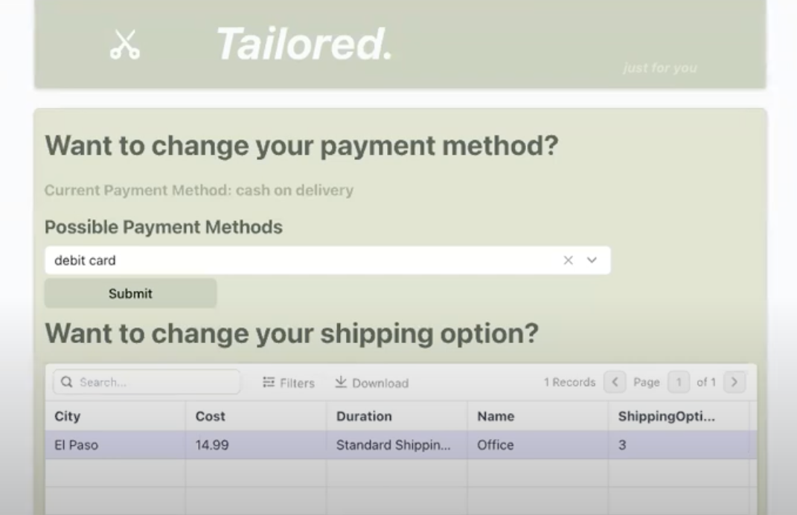

Currently, whilst shopping for clothing or accessories, people run into the issue of too many choices, many of which are not personalized to their preferences. Our product, Tailored, minimizes this indecisiveness when shopping. Acting as a blend of Google and Pinterest, Tailored will allow users to bring their fashion vision board to reality. The app will take in input information relating to their stylistic choices and demographics such as age, gender, preferred color palettes, textures, purpose of purchase, price range, gender, and urgency. From this user information, the app will select from multiple databases, the appropriate clothing options for the user, and display outfits with links to the specific pieces. This personalized method of shopping allows users to streamline their decisions.
This project aimed to train a k-nearest neighbor model on ozone concentrations across different states in the U.S. between 2015 and 2020, as well as heart disease mortality rate, so that it has the ability to predict mortality rate due to heart diseases in the future based on ambient ozone concentration. It also visualizes the heart disease mortality risk of each state and the levels of ozone concentration on the U.S. map to demonstrate the relationship between these variables. Finally, the project utilized linear regression to investigate the correlation between ozone concentration and heart disease.
This web application was built with Streamlit with the goal of helping scientists visualize their next generation sequencing plates by simply inputting the plate's barcode. It retrieves data using Benchling API and returns plate contents as a formatted and color coded table.